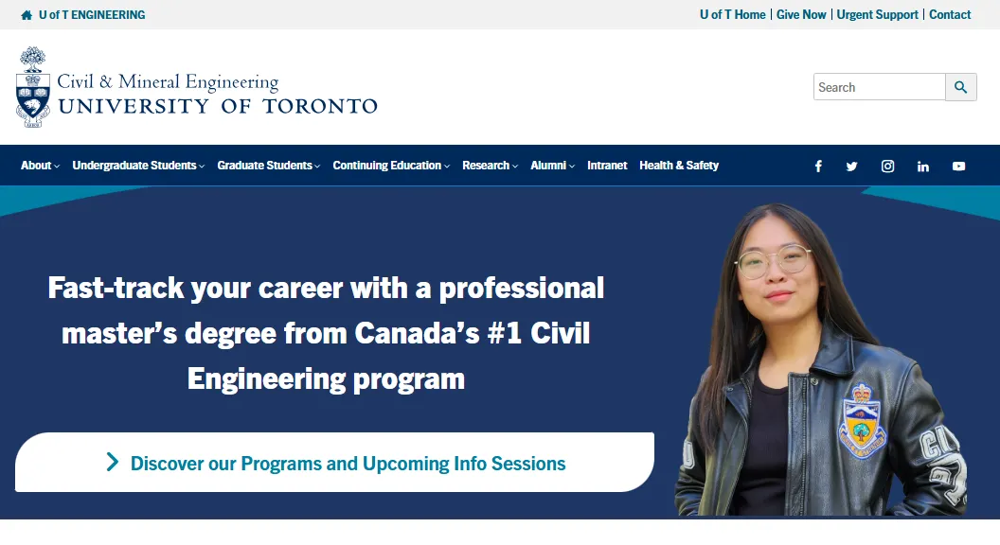
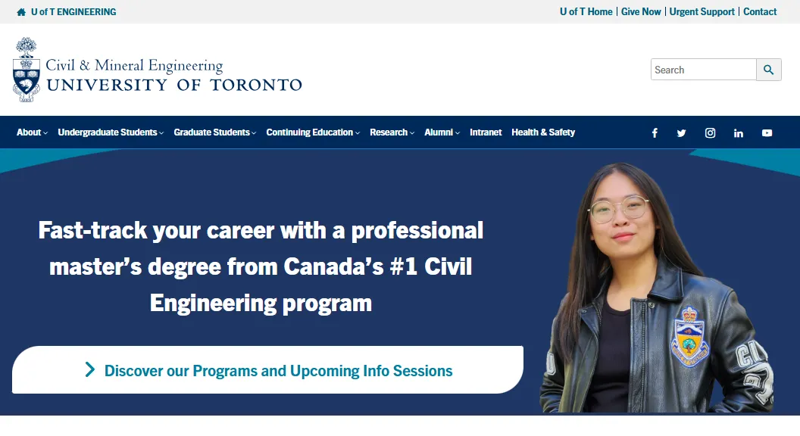

UX/UI and Front End Developer
Design and Development completed between January and March, 2025.
High-fidelity mockups and development of the Home Page on WordPress.
Figma (For UI Design), Sharepoint (For File Sharing), WordPress (For Site Development)
This redesign project aimed to transform the University of Toronto’s Electrical & Computer Engineering (ECE) department homepage into a compelling, student-focused digital experience.
The core goals were to attract prospective students, serve as a clear access portal to key departmental information, and represent the department’s research, programs, and values effectively.
Help Recruit Prospective Students
Do visitors get the information they need to want to join the department?
Be an Access Portal
Are visitors guided to important information about the ECE Department's research and programs?
Be Representative
Do people understand the interests and goals of the Department of Electrical & Computer Engineering?
Surface Key Gaps in the Existing Page
Outdated visuals, vague research info, no co-op details, and low event visibility.
Design for Visual Clarity and Action
Text-heavy layout with few visual cues or CTAs to guide users.
Align with U of T’s Brand Standards
Inconsistent application of U of T guidelines compared to other FASE departments.
The design process began with a design audit and competitive research to identify gaps and best practices. This informed wireframes and mockups creation.
The UI redesign emphasized clarity and visual hierarchy, addressing outdated and missing elements. Design concepts were refined through iterative ideation and layout exploration.
Tasks such as Design Audit, Competitor research, Wireframes, and High-fidelity Mockups.
Tasks such as Developing using WordPress + Apply UI Element Animations, and Check Responsiveness.
To Explore multiple layouts + UI ideas and visualize the redesign direction.
To Benchmark functionality and appeal.
Create high-fidelity designs and visual mockups using Figma.
Design Audit
| Design Elements | Purpose of Element | Already Exists? | Redesign Needed? | Narrative Order |
|---|---|---|---|---|
| Hero Banner | Draw in People | Yes, not student-focused | Yes | 1 |
| Interactive Banner | Jobs & Events | Exists, but inactive | No | 2 |
| Quick Links | Navigate site | Exists, poorly styled | Yes | 3 |
| Important Facts | Why join ECE | No, outdated content | Yes | 4 |
| Programs of Study | Highlight offerings | Yes, 2020–21 content | Yes | 5 |
| Chair’s Message / Events | Welcome & Events | Chair exists, not Events | Yes | 6 |
| Other Highlights | Research & Co-op | Research links exist | Yes | 7 |
 



.webp)


I presented my mockups and supporting material to the Department’s internal teams for feedback and approval. Post-approval, I developed the website page on WordPress.
The final solution now reflects the following changes:
The website is currently up to date content wise as well as modular in design which makes it highly customizable, allowing the team to change the backgrounds as well as any graphics to work for the latest Departmental campaign.
Initial stakeholder feedback and analytics have shown marked improvements in information organization and accessibility of content.
Is it focused on recruiting Prospective Students?
It provides information to aid prospective student decision making and links to important subpages.
Is it an Access Portal?
It is an Access portal: showcases the department’s strengths, prompts an exploration of the various programs and opportunities.
Is it Representative?
It Represents the Department more accurately in terms of content and style.
The goal of this project was to redesign the home page to serve as a tool for recruitment of prospective students and represent the ECE Department. By structuring accurate content effectively and incorporating authentic images of the department, I designed the website's homepage on WordPress. It was very important to ensure it served these requirements as it a part of the Faculty of Applied Science & Engineering at the University of Toronto. They need to attract as well as be consistent across the Faculty. There were strict guidelines and conventions to follow; this website would be used by students, professors, university staff, as well as Industry Partners throughout Toronto and Canada.
Key Takeaway: Stakeholder Perspectives
This project taught me to advocate for design and understand a wide range of stakeholders, including the different staff members in the department, the wider Engineering Faculty, as well as the needs and demands of the students we wished to recruit, and the Professors and Researchers who work at the Department.